RECON 残留小亮对象诊断
RECON_PROMINENCE：哪些小亮点仍未缓解，哪些已明显缓解
156 场已有结果，14,958 个输入定义小亮对象；本页只做诊断，没有新增算法或拟合。R1–R6 是跨城市强残留，S1–S6 是跨城市强缓解，N1/N2/L1 是机制代表。
主要下一步：缺测不应扩大形态对象；被树木包围的亮点需要取得合适同日参考。已检查实例不支持优先取消道路保护。明显有效的局部修正应保留。
EXPAND 与 RECON 使用同一场 RAW P2–P98 色限；灰色是原无效支持。强降幅后的像元仍可能高于色限上限。RGB用于定位，输入定义亮对象也不都已核实为屋顶。
完整诊断与下一步机制 · 15 例数据 · 参考筛选计数 · 缺测连通性证据
R1 · 大庆 · 2021-09-18
3 个输入亮像元；额外降低 0.000，剩余对象－邻域差 11.922 μg/m³。SPECTRAL_ADMISSION
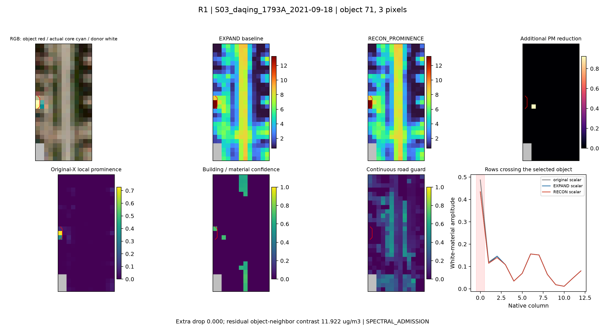
R2 · yueyang · 2022-07-01
7 个输入亮像元；额外降低 0.000，剩余对象－邻域差 8.650 μg/m³。DONOR_UNAVAILABLE
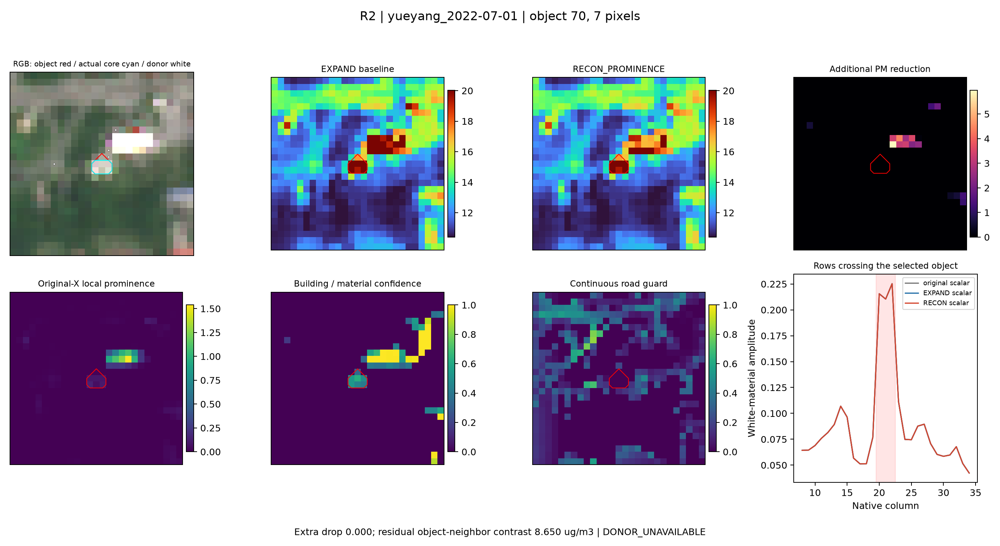
R3 · 淄博 · 2021-05-24
2 个输入亮像元；额外降低 0.000，剩余对象－邻域差 8.510 μg/m³。DONOR_UNAVAILABLE
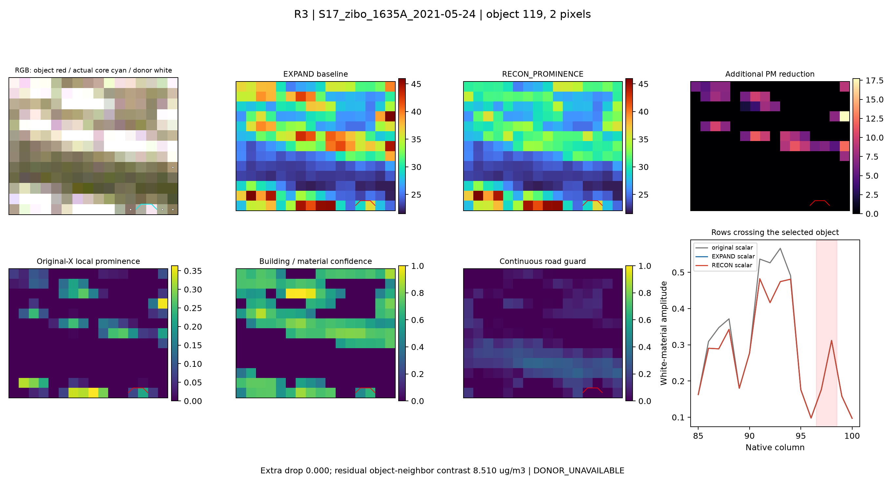
R4 · 临汾 · 2021-09-12
6 个输入亮像元；额外降低 0.000，剩余对象－邻域差 8.504 μg/m³。DONOR_UNAVAILABLE
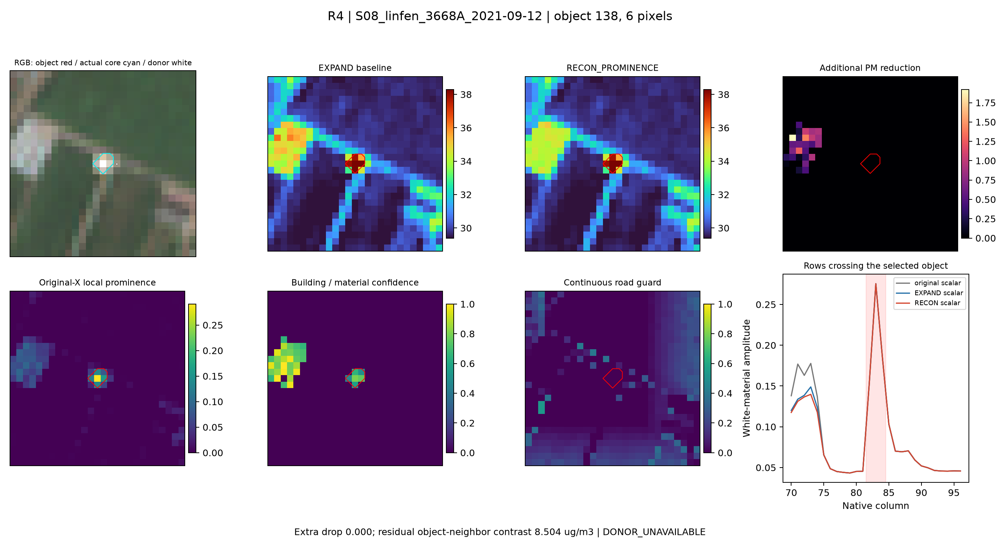
R5 · 吉安 · 2021-09-11
4 个输入亮像元；额外降低 0.000，剩余对象－邻域差 7.827 μg/m³。DONOR_UNAVAILABLE
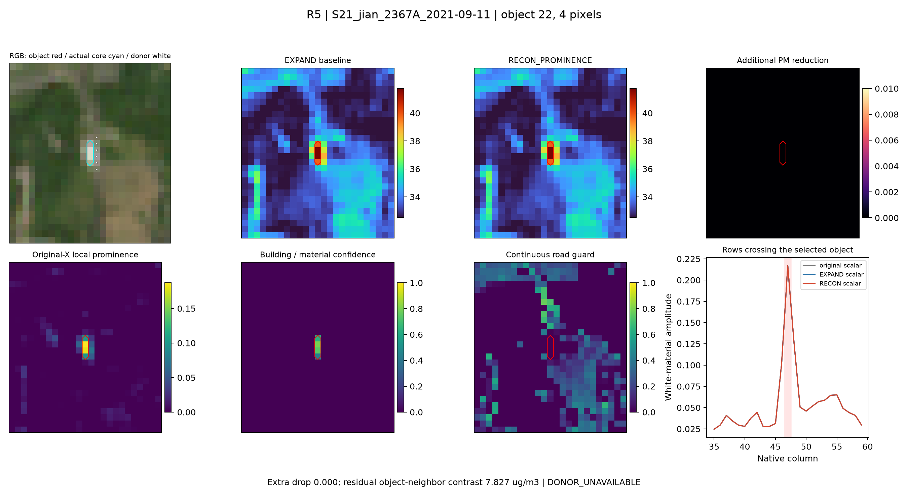
R6 · WINDOW_B · 2022-07-08
4 个输入亮像元；额外降低 0.000，剩余对象－邻域差 7.426 μg/m³。DONOR_UNAVAILABLE
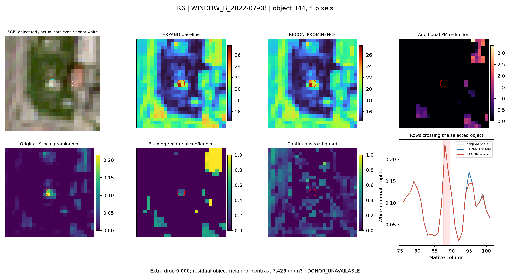
S1 · 阳泉 · 2021-06-19
6 个输入亮像元；额外降低 12.377，剩余对象－邻域差 11.460 μg/m³。PARTIAL_VALID_ACTION
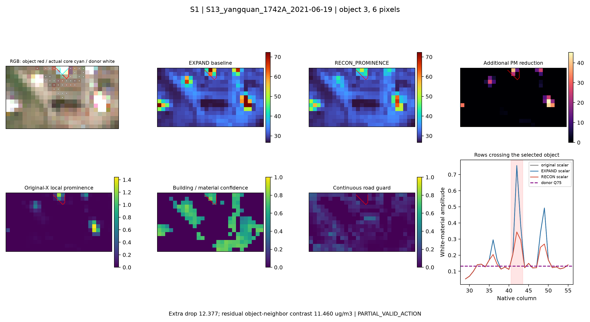
S2 · 济宁 · 2021-02-23
18 个输入亮像元；额外降低 10.115，剩余对象－邻域差 5.716 μg/m³。PARTIAL_VALID_ACTION
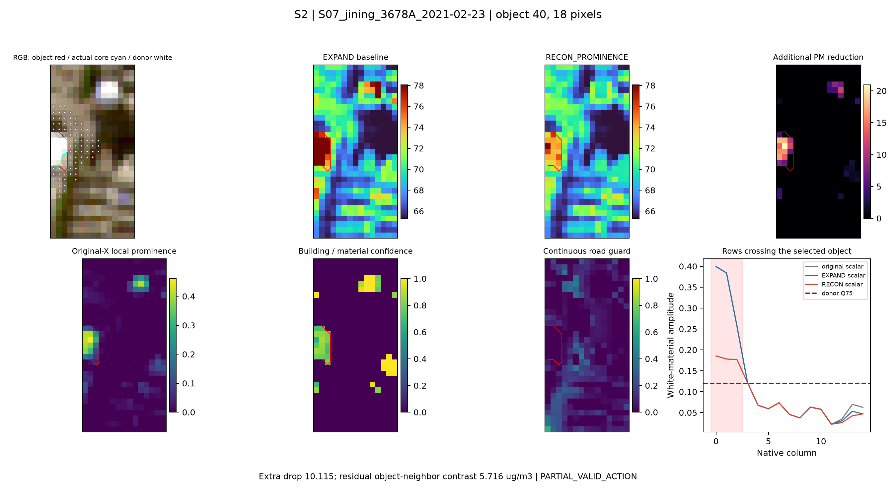
S3 · 周口 · 2021-06-06
5 个输入亮像元；额外降低 8.735，剩余对象－邻域差 9.431 μg/m³。PARTIAL_VALID_ACTION
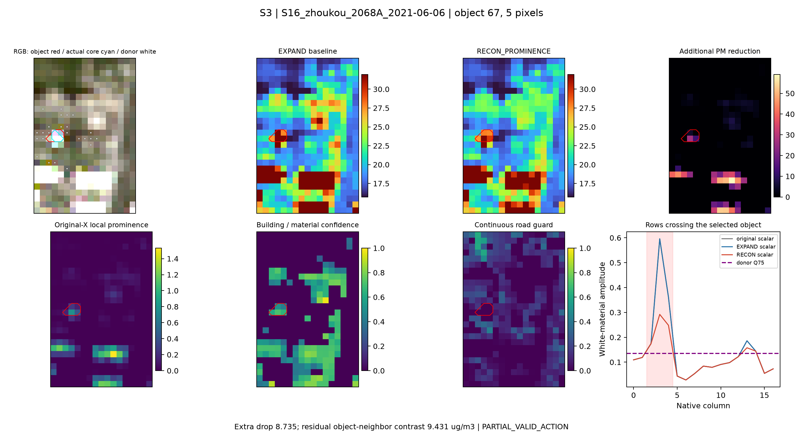
S4 · 南阳 · 2021-02-21
2 个输入亮像元；额外降低 7.685，剩余对象－邻域差 0.949 μg/m³。PARTIAL_VALID_ACTION
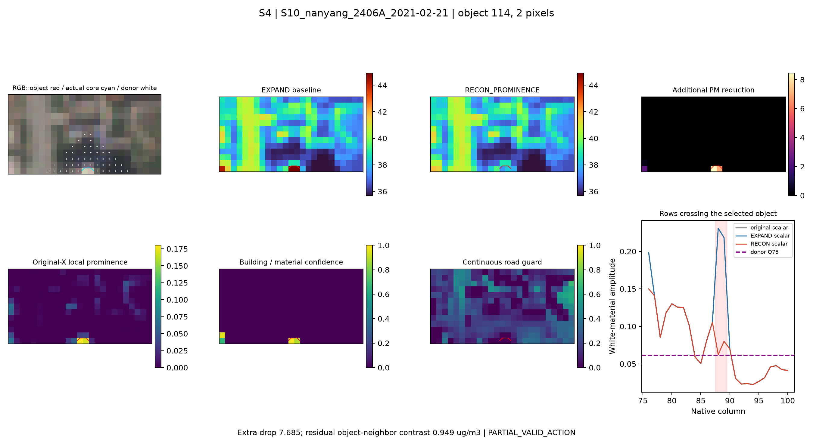
S5 · 大庆 · 2021-05-21
10 个输入亮像元；额外降低 7.489，剩余对象－邻域差 5.426 μg/m³。PARTIAL_CORE_COVERAGE_WITH_ACTION
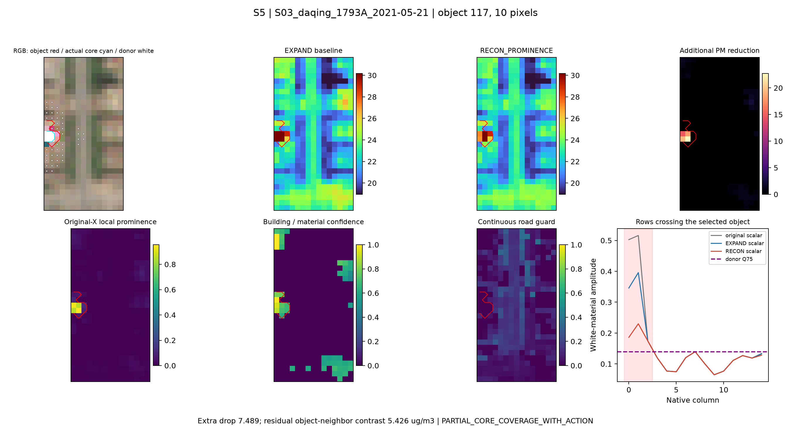
S6 · 吉安 · 2021-09-01
12 个输入亮像元；额外降低 7.184，剩余对象－邻域差 2.823 μg/m³。PARTIAL_VALID_ACTION
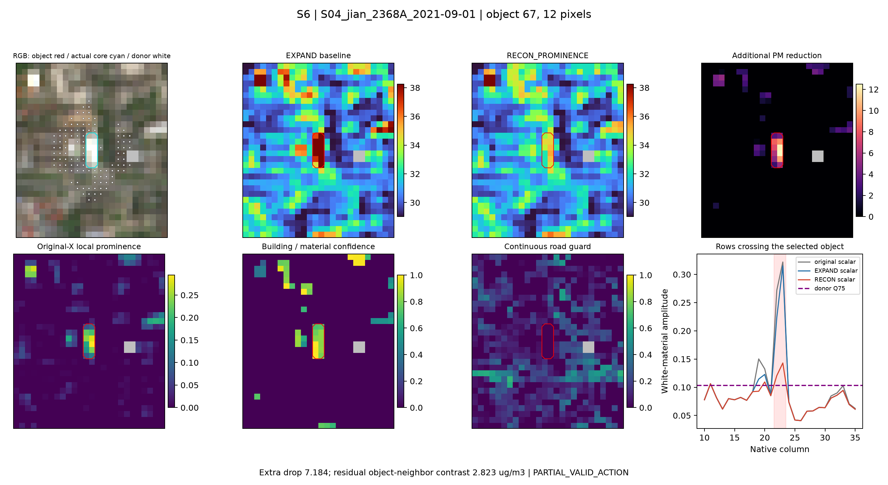
N1 · 济宁 · 2021-02-23
1 个输入亮像元；额外降低 0.000，剩余对象－邻域差 6.699 μg/m³。NO_LOCAL_PEAK_CORE
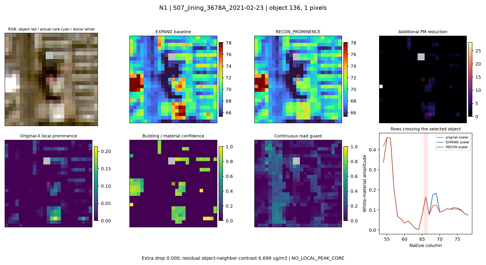
N2 · 丹东 · 2019-10-03
4 个输入亮像元；额外降低 0.000，剩余对象－邻域差 5.809 μg/m³。NO_LOCAL_PEAK_CORE
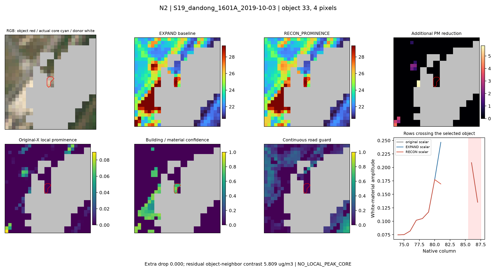
L1 · WINDOW_A · 2022-04-07
3 个输入亮像元；额外降低 0.000，剩余对象－邻域差 3.741 μg/m³。LOCAL_REFERENCE_OR_ALREADY_REDUCED
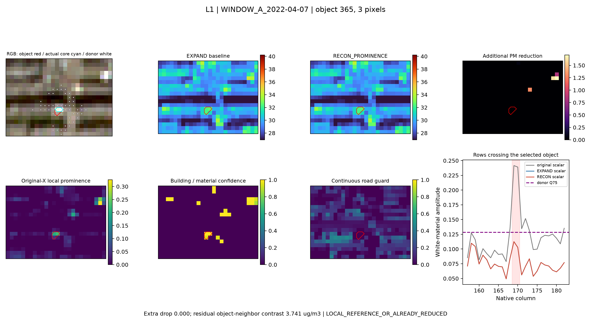